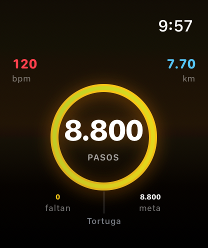
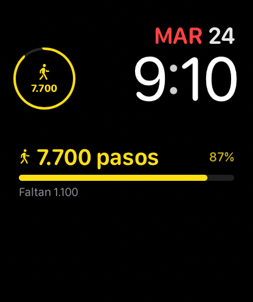

Stride It lives on your Apple Watch. Track every step in real time, glance at your progress through always-on complications, and let your wrist keep you moving — all day, every day.

App

Complication
What you get
Whether you're taking your first steps toward an active lifestyle or complementing a full workout routine, Stride It has everything you need.
Your Watch is the source of truth. Track steps directly from your wrist with real-time accuracy, all day long.
Climb through step levels — from your very first 500 to the 8,800-step peak. Every step forward is a win worth celebrating.
View your step history by day, week, or month. Spot patterns, see your streaks, and discover how far you've come.
Gentle nudges at 7 AM, 12 PM, and 5:30 PM let you know exactly how many steps are left to hit your daily goal.
Keep your step count visible at all times with lock screen and home screen widgets that update automatically.
See your monthly kilometers translated into real-world distances — like the gap between two countries on a map.
Ready to move?
Download Stride It, add it to your Apple Watch, and start turning every step into a milestone.